A 1,069-Page Book in 15 Minutes: Cutting Claude Usage by Over 90% With a Local AI on My GPU¶
When a 1,000-page PDF user manual lands in front of you, you know what's coming. Today the tokens are going to burn.
There are two ways out. The first is to sweet-talk the new hire into lending you some tokens; they may have barely touched this week's limit. The second is in this post. It's easier on the conscience.
Each Claude plan has a set amount you can use (a usage limit), and that usage goes far more into reading than into editing code. So I ran an AI model on the graphics card in my local PC (an RTX 3090) and handed the reading to it. On most jobs, Claude usage fell by over 90%.
30-second summary¶
- The local AI summarized a book of over 1,000 pages (1,069) chapter by chapter in 15 minutes. Claude usage fell by over 90%.
- 131 blog posts took 4 min 38 s and 6 phone screenshots of articles took 13 s; both cut Claude usage by over 90%.
- A 3-minute NASA video was summarized in about 40 seconds from a transcript plus frame descriptions. Claude usage fell by 85-95%, depending on frame size.
- The savings are against an estimate of Claude reading or viewing it itself. For three or four posts the difference is small.
- Numbers and on-screen text were mostly accurate, but the book summary and the rules pulled from indicator posts had a few places where a meaning or a number changed. So Claude double-checks the local AI's summaries against the source.
- The model is Qwen3.6 35B, running on my local PC. It answers at about 164 tokens per second and can look at images (a token is the unit an AI counts text in; roughly three quarters of an English word).
- You can keep the same Claude Code screen and swap only the brain for the local model. One line,
claude-local, gives you file edits, terminal runs and even web search with no Claude usage. - Code edits and anything that needs judgment stay with Claude.
What I installed¶
| Item | Details |
|---|---|
| Graphics card | RTX 3090 (24 GB of memory) |
| Runtime | Ollama (a free program that downloads and runs models) |
| Model | Qwen3.6 35B (Alibaba's open model. 35B means 35 billion numbers inside; it uses only about 3 billion of them at a time, which makes it fast; explained under "Why the 35B") |
| Model file | 22 GB (each number stored in 4 bits, a much shorter form) |
| GPU memory used | 23.2 GB (of 24 GB) |
| Reading window | 65,536 tokens (well over 100 book pages) |
| Speed | about 164 tokens/s |
One memory setting made a big difference. Storing the space where the model keeps what it has already read (the KV cache) in shorter numbers halves its memory. I spent the saving on a reading window twice as large.
It isn't NVIDIA-only. The runtime (Ollama) also supports AMD graphics cards and Apple silicon Macs, and there are Mac builds of Qwen3.6. What matters is memory, not the brand.
The 35B (4-bit) with a 65,536-token reading window needs about 23 GB, so you need a 24 GB graphics card or a Mac with 32 GB or more. With less memory, use a smaller model (the 27B takes 20.6 GB, and smaller versions exist) or a shorter reading window. Speed depends on how fast the memory moves data (memory bandwidth), much as a wider road lets more cars through at once, so the same model can run faster or slower than the numbers here on other hardware. I only measured on NVIDIA, though.
Same screen, different brain: Claude Code on a local model¶
This was the most useful part. You keep the Claude Code screen you already use and swap only the brain that answers for a model running on your local PC.
- Open it with
claudeand Claude on Anthropic's servers answers, as usual. - Open it with
claude-localand you get the same screen and the same tools, but Qwen3.6 35B, running on my local PC, answers. Claude usage: zero. - Editing files, running terminal commands and reading web pages all work. Web search goes through a search program I run on the local PC (see "Search had to be added" below).
So running out of Claude usage doesn't stop the work. Before the limit hits, have Claude write a few lines on where things stand, reopen with claude-local, hand it the note, and carry on in the same screen.
The two sessions can also message each other. Claude Code can send a message to another session open on the same computer, and a session running on the local model joins in the same way. Opening a local session and having it message the Claude session took 13 s, and the message arrived intact. The other way round, the Claude session sent "ping," and the local session, busy with a task, read it and answered "pong." So you can pass the progress note as a message, or have the Claude session hand a long job to the local session and get the result back as a message.
The local model needed instructions spelled out as "step 1, step 2…". Told vaguely to wait, it ignored that and finished within seconds. The local session also couldn't see sessions on other computers or connected remotely.
The numbers:
- Create one file, run it and report the result: 39 s
- Four hard research questions that needed dates and numbers from several pages: all 13 facts right, 68 s per question on average
There are limits. The local runtime has no way to remember instructions it has already read (prompt caching), so every exchange re-reads Claude Code's 20,000-token system prompt from scratch. Even short jobs take tens of seconds, and long jobs with dozens of steps are clearly weaker than on Claude. Two setup traps are under "The trap" below.
Splitting the roles: Claude finds, the local AI reads¶
Day to day it works like this. I work in Claude and hand over only the reading-heavy jobs.
- Claude decides what to read. It picks file paths or web addresses, without reading the contents.
- The local AI opens and reads the files and pages itself.
- The local AI sends back only a few lines of summary.
- Claude judges from those few lines and checks the important parts against the source once more.
The expensive part is the source text. It never passes through Claude, so the usage drops by that much.
The link is built with MCP, a standard plug for adding tools to Claude. Register a small program and Claude sees it as one more tool, next to "edit a file" or "run a command." I built a "have the local AI read this" tool and plugged it in. The tool opens the files on my computer itself, so the source text never goes through Claude. Its description says "use this when there's a lot to read," and Claude hands work over without my asking.
| Way | Who answers | When |
|---|---|---|
claude-local |
The local model runs the whole session | When Claude usage runs out |
| MCP tool | Claude works; only the reading goes to the local model | Day to day |
Measured: 131 posts, a 1,069-page book, images, a video¶
131 blog posts¶
The 131 investment posts (650,000 characters) took 4 min 38 s locally, and the Claude side used only about 5,000 tokens to read the summaries. Had Claude read them itself, it would have taken hundreds of thousands of tokens and nearly filled the conversation. That's over 90% less.
Small batches are different. Seven series posts (52,000 characters) took 41 s, but the actual saving was only about 20,000-30,000 tokens. For three or four posts, just let Claude read them.
The summaries were usable. The accuracy figures in the series summary (95%, 97%) matched the source. But a few Chinese words slipped into the 131-post summary, an occasional habit of this model family.
Pulling 100 "how to read this indicator" rules out of 12 indicator posts went the same way. Most matched the source in meaning, but at least five did not: a band moved ("above +1.5" became "0 to 1.5"), and a tool "for getting a sense of size" became one that "hides the size". So anything used as is, like the briefing's rules, Claude checked against the source again.
A 1,069-page book¶
I had it summarize a textbook chapter by chapter. The PDF is a scanned paper book with a text layer added. It had no bookmarks, so first the local AI read the contents pages and found where each of the 42 chapters starts (42 s). Then it read and summarized each chapter and wrote one file: a contents table, an overview of the book, and per-chapter summaries. It took 15 minutes, and the local AI read about 630,000 tokens. Claude spent about 30,000 tokens writing the program and checking the result. Reading the book itself would have taken over 630,000, so that is over 90% less (an estimate).
I checked two chapters against the book. Every number was right. But one chapter had two explanations reversed: where the book's rule was "sell A and buy B," the summary wrote "buy A and sell B." Five Chinese words slipped in too. It is great for skimming the book's structure and finding the chapter you need, but risky to act on the summary alone. So whenever I use the local AI's summary, Claude checks the important parts against the source once more.
Images: screenshots, photo checks, photo sorting¶
Qwen3.6 can look at images. Claude sees images well too and judges more accurately, but every image costs usage: about 1,500 tokens each.
Phone screenshots. I often photograph news articles on my phone and send them to Claude. But attaching a photo straight to a message puts it into Claude the moment it's sent, so the usage is already spent. So photos go to an inbox folder in my cloud sync, and I just say "read the inbox." The local AI reads the photos on the PC, and Claude gets only the summary. With 6 article screenshots, Claude's side went from about 12,000 tokens (an estimate from image size) to about 1,000, and the reading took 13 s. Titles, text and numbers were transcribed correctly. For just a few photos, attaching them directly is easier, since Claude can look and judge for itself.
Checking AI-generated photos. I had it look for flaws in photos I had generated with AI.

It checked 7 photos in 19 s, about 2.7 s each, and in one pass found a Canadian flag with a malformed maple leaf, a car standing on bare rock with no road, and uneven dock posts. So when I generate several images, the local AI weeds out the clear failures first, and Claude looks only at the few that remain. Choosing between two good images is not its job.
Sorting photos. Captioning and tagging 61 photos took 97 s (1.6 s each), and in the 5 I checked, every scene description was right. That's enough for finding things later, like "river and snow-covered forest" or "domed building." Details were weak, though: it made up text in photos, called a stone wall a bridge, and counted people loosely. It also spotted only 1 of 5 AI-generated photos as AI-made.
A 3-minute NASA video¶
I tried a 3-minute video NASA released, about finding mine pollution from space. A speech-to-text model (Whisper) transcribed the audio, and Qwen3.6 looked at 24 frames taken wherever the scene changed. Together they produced a one-line summary, a timeline table and the facts that appear only on screen. All of it took about 40 seconds.
It read the on-screen text exactly: the "~50,000 mines" caption, the instrument's acronym spelled out, and the numbers on a data screen all matched the video. It made small slips, like calling a blank white frame "a person speaking." Having Claude look at the 24 frames and the transcript would have cost about 10,000-30,000 tokens depending on frame size (an estimate); the summary part of the result file is about 1,500. That's 85-95% less.
PDFs, Hangul files and web pages too¶
I added a step that turns files into plain text the local AI can read.
| Format | How it's converted |
|---|---|
| Text is pulled from each page. Pages with no text (scans) are read by the model as images | |
| Word, Excel, PowerPoint | Paragraphs, tables and sheets become text. Old formats (.doc, .xls, .ppt) work too |
| Hangul (.hwp, .hwpx) | Text is pulled with an open-source tool |
| Web pages | Give it an address and it fetches only the main text |
Long PDFs pay off well. When Claude reads a PDF, it gets each page's text plus an image of the page. Text alone is 1,500-3,000 tokens per page, and the images cost extra. A 36-page English technical manual comes to over 50,000-110,000 tokens. The local AI summarized its title, target product and main contents in 16 s.
I don't hand over number-heavy files like Excel sheets. This model gets totals and trends wrong easily. Claude computing the numbers with code is more accurate and uses little to begin with.
The old Word and PowerPoint formats need a converter that is no longer maintained, and old programs don't get security holes fixed. Because these are files of unknown origin, it runs only inside an isolated container (Docker) with no internet and no write access.
Search runs locally too¶
Reading web pages worked locally from the start. Searching didn't.
Claude Code's search runs on Anthropic's servers, not on my computer. Switch to a local model and requests no longer go there, so search disappears with them. So I ran an open-source program on my local PC that queries several search engines for you (SearXNG), and plugged it in as an MCP tool, the same way as above. It uses only about 125 MB of memory.
In normal Claude sessions, web research goes to the local side as well. Here Claude doesn't pick addresses; it only passes the question.
- The local PC searches with SearXNG.
- The local PC opens the top five or six pages itself.
- The local AI writes an answer from those pages only. Each sentence carries a source number and a verbatim quote, and it notes where sources disagree.
- Claude reads only that answer, around 1,000 tokens.
Had Claude searched itself, reading the results and three or four pages would have cost well over 10,000 tokens (an estimate).
I tried three questions whose answers I could check against the source.
| Question | Local AI's answer | Checked against the source |
|---|---|---|
| Latest Ollama version? | 0.40.12 (October 27); noted that Wikipedia still says 0.40.11 | Right (GitHub releases page) |
| Default Python on Ubuntu 26.04? | 3.14 | Right, but one page it cited was read off the 25.10 row, not 26.04 |
| Can FLUX.2 [klein] 9B be used commercially? (asked in Korean) | 9B is non-commercial; 4B is Apache 2.0, so commercial use is fine | Right (both Hugging Face model cards) |
All three conclusions were right. I still don't take them as is. As with the Ubuntu answer, it can reach the right conclusion and pin the evidence on the wrong row. In another test it quoted a robot driver's docs exactly, but those docs were for the latest development release, not the one I run. So for answers a decision rests on (versions, dates, compatibility), Claude opens the official page itself and checks two things: that the quoted sentence really is on that page, and that it applies to the version I use. When I already know the official page, I add it to the reading list from the start.
On a day with no Claude usage left, it can still look things up. I asked the local session (claude-local) to "find the latest Ollama version." It searched, opened the GitHub page and answered with the right version and its source in 52 s.
What to hand over, and what not¶
The rule is simple. If a job means reading a lot and returning something short, it goes to the local AI.
- Hand over: summarizing many documents, condensing long logs, web research (search and page reading), finding what you need in a long PDF or a book, summarizing a video, a first pass over photos
- After handing over: don't use the result as is; Claude checks numbers, names and key explanations against the source once more
- Keep on Claude: code edits and debugging (Claude has to read the code anyway), fact checks, post reviews, final edits, calculations, small jobs
Why the 35B: against the 27B and BigBang-v1¶
I gave the same jobs to the Qwen3.6 27B from the same family and to BigBang-v1, a model tuned for search. The 35B has more numbers yet runs faster, thanks to a design called MoE (mixture of experts). Picture a company with 100 experts, where a front desk passes each question to only the two or three who fit it best. The 27B uses all 27 billion of its numbers for every token it writes; the 35B uses about 3 billion of its 35 billion. The catch is that all the experts have to wait in memory, so it needs more memory.
| Qwen3.6 27B | BigBang-v1 | Qwen3.6 35B | |
|---|---|---|---|
| Speed | 63 tokens/s | 144 tokens/s | 164 tokens/s |
| Sees images | yes | no | yes |
| Search test (3 questions, 7 facts) | 6 of 7, 323 s | all 7, 168 s | all 7, 128 s |
| Checking 7 photos | about 47 s | - | 19 s |
| Summarizing 7 posts | 1 min 56 s | - | 41 s |
| Summarizing 131 posts | 12 min 16 s | - | 4 min 38 s |
claude-local task (create and run a file) |
1 min 42 s | - | 39 s |
The same jobs ran 1.6-2.8x faster on the 35B, so summarizing, search and image checks all go to that one model. BigBang-v1 searched well but can't see images. The copy I got was an unofficial upload by an individual, and it threw errors as soon as I connected Claude Code: the chat-format settings bundled with the model didn't match the shape of the requests Claude Code sends.
The 35B has a downside too. It takes 23.2 GB of GPU memory, so it slows down as soon as another program holds a little memory. That is the next trap.
The trap: one graphics card¶
This is the problem I spent longest on. The same graphics card also makes images and video (ComfyUI) and runs a robot simulator (Isaac Sim). I finished an image job without closing that program, and it kept holding 15.8 GB. When I then ran the 27B, three quarters of the model didn't fit on the graphics card and spilled onto the CPU, which does this kind of math far slower than a graphics card. There was no error. It just slowed from 63 to 7 tokens per second. The odd speed made me check who was using GPU memory (nvidia-smi), and only then did I find the cause. The 35B takes 23.2 GB, so it has even less room.
So I set rules:
- Always close the image program when an image job is done.
- Before using the local AI, check that the model is 100% on the graphics card (
ollama ps). - Before making images again, unload the local model (
ollama stop).
Remembering that every time is hard, so the check is now built in. claude-local and the summary tools look at who is using the graphics card before they start. If another job such as ComfyUI or Isaac Sim holds memory, they don't load the model; they report "who is using how many GB" and stop. They don't shut that job down either. Then I just use Claude, or try again after that job finishes. With a 3 GB dummy job running as a test, all three stopped as they should.
For anyone trying this, two technical traps:
- Running Claude Code on a local model can throw "model not found" mid-session. The small model name used for background tasks (haiku) has to point at the local model too.
- For an unknown model, Claude Code assumes it reads 200,000 tokens at once. Unless you tell it the real size (65,536), the local runtime rejects requests once the conversation gets long.
Takeaways¶
- A local AI can't replace Claude, but as a reading worker it is enough.
- The payoff grows with the amount of reading. For three or four posts just use Claude; for dozens of posts or a whole book, Claude usage falls by over 90%.
- Treat results as drafts. An explanation can come out reversed, so Claude double-checks numbers, names and key explanations against the source, and does the judging and editing.
- If you share the graphics card with other work, first check who is holding the memory. Letting a program check for you is easier.
- One model, Qwen3.6 35B, handled summarizing, search, image checks and video summaries. Details and judgment are still its weak spot.
Sources and notices¶
Settings (KV cache quantization, context length, keep-alive) follow the official Ollama FAQ; the environment variables for running Claude Code on a local model follow the Ollama and Claude Code docs and community guides; tokens per PDF page follow Anthropic's PDF support documentation. The video is NASA's "How NASA Uses Light to Detect Waste From Mines" (public domain). AMD and Mac support is based on Ollama's release files and model library (not tested here). Speeds, times and memory figures are single measurements on my PC on October 25, 2026 (the search test on October 27), and the "if Claude read it itself" figures are estimates from character counts. The photos checked are not real places; I generated them with FLUX.2 [klein]. The clip at the top is AI-made: first frame with FLUX 3 Image Klein, motion with MiniMax H3. Claude and Claude Code are trademarks of Anthropic PBC; Qwen of Alibaba Cloud; Ollama of Ollama, Inc.; NVIDIA, GeForce, RTX and Isaac Sim of NVIDIA Corporation; Docker of Docker, Inc.; Microsoft Word, Excel and PowerPoint of Microsoft Corporation; Hangul (HWP) of Hancom Inc.; GitHub of GitHub, Inc.; Ubuntu of Canonical Ltd.; Python of the Python Software Foundation; Hugging Face of Hugging Face, Inc.; Wikipedia of the Wikimedia Foundation; FLUX of Black Forest Labs; MiniMax of MiniMax; ComfyUI of Comfy Org; Whisper of OpenAI. They are used for identification only.
Glossary¶
- Local AI: an AI model that runs on your own computer instead of an online service
- Session: one running Claude Code window and the conversation in it
- Token: the unit an AI reads and writes text in. Roughly three quarters of an English word
- Claude usage: how many tokens Claude has read and written. Each plan has a limit
- Ollama: a free program that downloads AI models and runs them on your computer
- 4-bit version (quantization): a version with its numbers shortened to save memory, at a small cost in quality
- KV cache: the memory where a model keeps what it has already read
- Prompt caching: remembering instructions so they don't have to be re-read. The local runtime didn't have it
- Container (Docker): a box that runs a program apart from the rest of the system
- SearXNG: an open-source program that asks several search engines for you and gathers the results
- MCP: a standard way to connect outside tools to an AI like Claude. A registered program shows up in the AI's tool list
- MoE (mixture of experts): a model split into many "experts," using only some of them for each job. Fast for its size
- Whisper: an open speech-to-text model